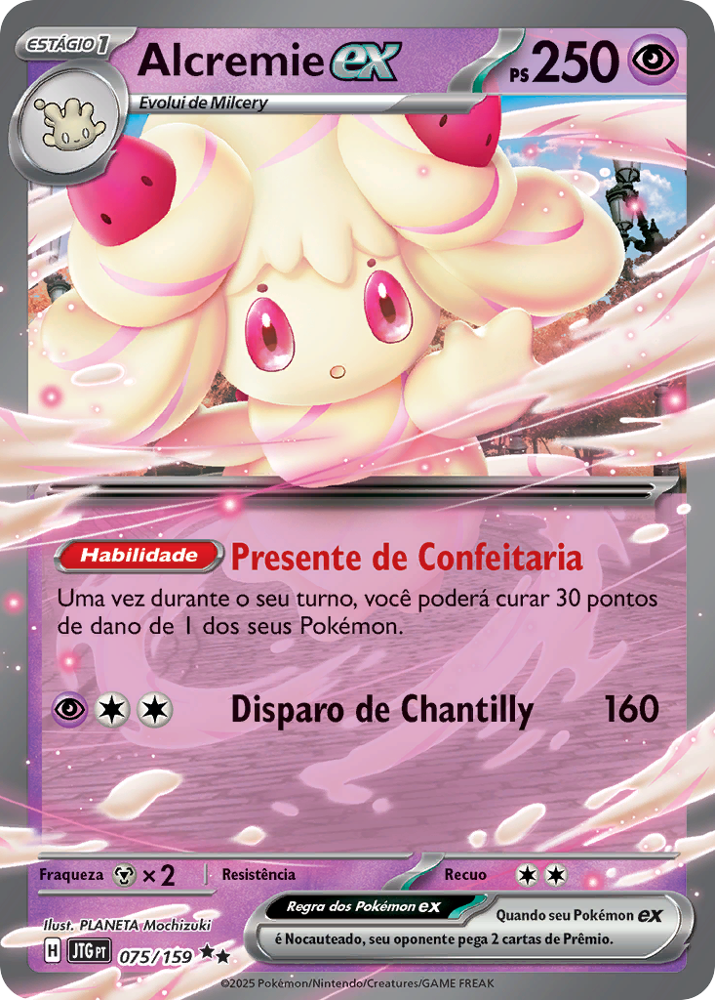
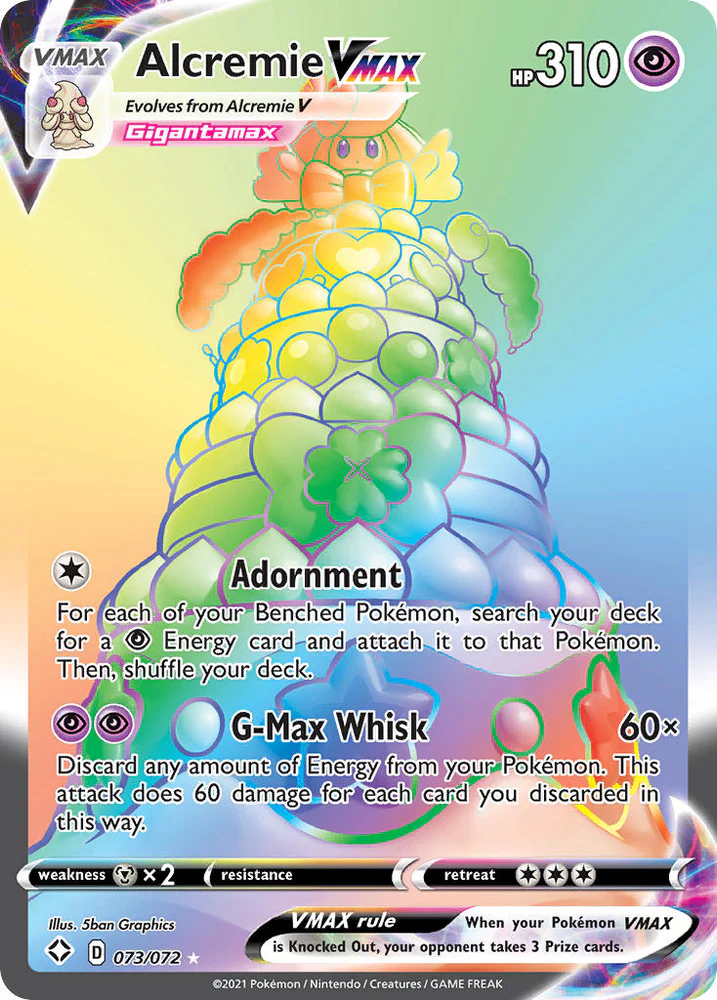
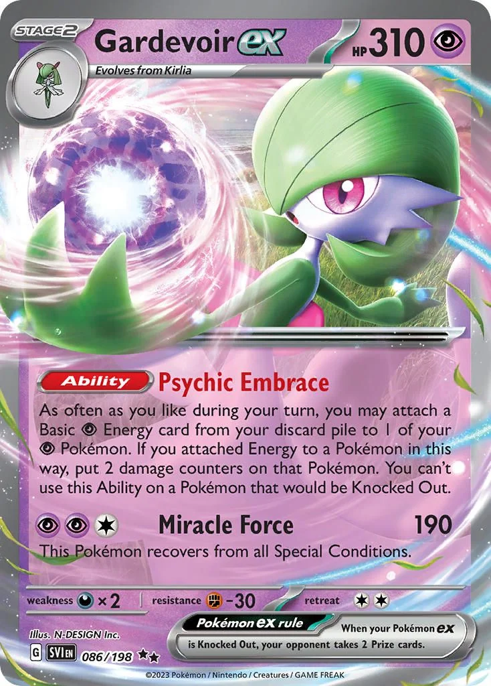

ALCREMIE EX

Alcremie EX é um Pokémon encantador e doce, cuja aparência
é inspirada em um bolo de creme. Com seu corpo composto por
cremosas nuvens e sua energia totalmente voltada para a
doçura, Alcremie EX brilha em batalhas não apenas pela
sua graça, mas também pela força de seus ataques. Sua
habilidade única, "Doçura Energizante", permite que ele
recupere energia a cada vez que um ataque de tipo Fada
atinge seu oponente, dando-lhe uma vantagem estratégica.
ALCREMIE VMAX

Alcremie VMAX é a versão imponente e majestosa do Pokémon
que encanta com sua doçura e poder. Quando Alcremie
alcança o seu estado VMAX, sua forma se expande e se
torna ainda mais impressionante, com camadas de creme
e doces flutuando ao seu redor, criando uma aura de
magia e charme. Sua presença em batalha é avassaladora
, e a força de seus ataques faz jus ao seu imenso
potencial.
GARDEVOIR EX

Gardevoir EX é a manifestação da elegância e do poder
psicológico em um Pokémon. Com sua postura refinada e
um olhar penetrante, Gardevoir EX é uma figura carismática
e imponente, capaz de ler os sentimentos de quem está ao
seu redor e usá-los a seu favor. Sua conexão psíquica com
o treinador é tão profunda que ela pode prever os
movimentos do adversário e reagir com agilidade
surpreendente.